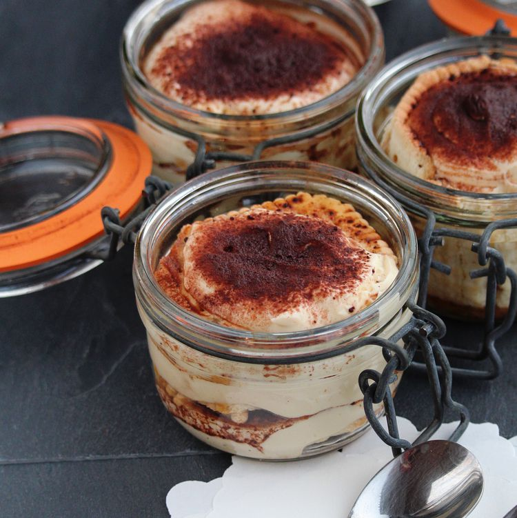

Tiramisu al marsala

Description
This famous and classic Italian dessert of savoiardi biscuits dipped in coffee and layered with a mixture of mascarpone cheese and eggs is a little different with the addition of Marsala wine.
Prep Time: 40 mins
Additional Time: 3 hrs
Total Time: 3 hrs 40 mins
Servings: 6
Ingredients
- 2 ½ cups brewed espresso coffee, cooled
- 1 ¼ cups Marsala wine
- 4 medium eggs, separated
- ½ cup white sugar, divided
- 14 ounces mascarpone cheese
- 40 Savoiardi biscuits (ladyfingers)
- 3 tablespoons cocoa powder, or more to taste
- 1 tablespoon chocolate shavings, or to taste
Steps
- Mix cooled coffee and Marsala wine together in a bowl.
- Beat egg yolks with half of the sugar in a bowl until you have a clear cream with no lumps. Stir the mascarpone with a wooden spoon or whisk in a separate bowl until creamy; stir into the egg yolks.
- Beat the egg whites with the remaining sugar in a separate bowl using an electric mixer until they form peaks; fold gently into mascarpone mixture.
- Dip half of the savoiardi biscuits into coffee-Marsala mixture. Arrange dipped biscuits carefully in a glass dish. Cover dipped biscuits with half of the mascarpone mixture. Smooth out mascarpone until evenly distributed; top with half of the cocoa powder. Repeat layering with dipped savoiardi biscuits, mascarpone mixture, and cocoa powder; top with chocolate shavings.
- Refrigerate tiramisu until flavors blend, at least 3 hours.